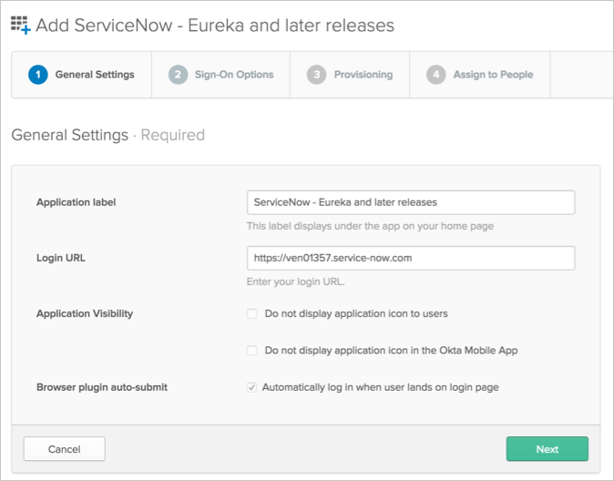
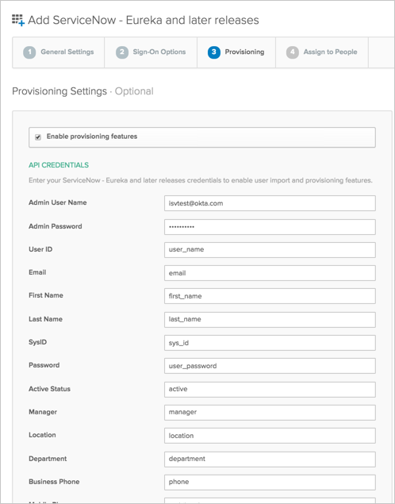

This guide provides the steps required to configure Provisioning for ServiceNow.
This guide is for ServiceNow - Eureka and later releases.
The following provisioning features are supported:
Push Groups
Groups and their members can be pushed to remote systems. For more about using group push operations see Using Group Push.
Import New Users
New users created in the third party application will be downloaded and turned in to new AppUser objects, for matching against existing OKTA users.
Import Profile Updates
Push New Users
New users created through OKTA will also be created in the third party application.
Push Password Updates
Updates made to the user's password through OKTA will be pushed to the third party application.
Push Profile Updates
Updates made to the user's profile through OKTA will be pushed to the third party application.
Push User Deactivation
Deactivating the user or disabling the user's access to the application through OKTA will deactivate the user in the third party application.
Reactivate Users
Reactivating the user through Okta will reactivate the user in the 3rd party application.
Before you configure provisioning for ServiceNow, make sure you have configured your complete Login URL name under the General Settings tab:

Configure your Sign-On Options on the next tab, then click Next to take you back to the Provisioning tab
Configure your Provisioning settings for ServiceNow as follows:
Check the Enable provisioning features box.
Enter your ServiceNow API Credentials:
Admin User Name: Enter a ServiceNow username with administrator permissions for your organization.
Admin Password: Enter a password for your administrator account (above).
The rest of the attributes are repopulated with default values. If you need to edit any of these values, you will need to enter the corresponding column names in the ServiceNow SYS_USER table. See Troubleshooting Tips, below.

Where do I find my SYS_USER table list?
Log into your ServiceNow Admin Account.
Select Ctl + Option(Alt) + N to open the Toggle Navigation Bar.
Search for : Tables.
Under System Definition, select Tables.
Search for SYS_USER.

How do I disable mapping for specific fields?
You can turn off synchronization for the specific field by leaving corresponding Service Now column name value as empty.